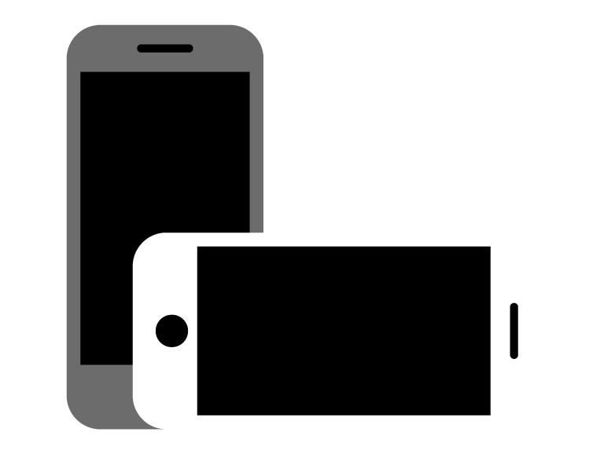

Hey there, partner! I reckon this page works best if you flip yer contraption on its side
OVERVIEW
Shipito is a package forwarding company that ships millions of packages to customers in nearly every country and territory in the world. Shipito launched a new admin platform to accelerate company growth and efficiency.

PROJECT
Design & build a new admin web app for ShipitoGOAL
Maximize company efficiency by making each user’s tasks as easy and effective as possible
TARGET USERS
All Shipito employees, managers, and executives
ROLE
Lead UX researcher & designer, front-end developer6 TYPES OF USERS
The Shipito admin platform is essential to 6 different groups of users:
PHASE 1
BECOMING THE USER
I dove headfirst into immersive user research. Here is a summary of the methods I used to deeply understand each user group:
1. Warehouse Workers
I spent 6 days in 3 warehouses, performing every function that they perform. I also observed them in context and interviewed 10 employees both during and after their various tasks. I also later returned twice to observe the new platform rollout.2. Warehouse Managers
During my 6 days in the warehouses, I also interviewed, observed, and helped perform the tasks of 6 different managers, seeking to gauge their top priorities, challenges, workarounds, and needs (both their reported and unspoken needs).3. Marketing Team
I had worked extensively with the marketing team previous to this project, so I compiled several insights I had previously gathered, and I spoke with 3 marketing team members about their needs, goals, and challenges with the new platform.4. Customer Service Team
I spent 2 days performing all functions of a customer service agent – answering chats, emails, phone calls, support tickets, relaying information to the dev team, mangers, and warehouse workers. I interviewed 5 customer service agents and 2 managers, and observed them performing their various tasks.
5. Finance Team
The financial team had much simpler and smaller involvement with the admin system. I interviewed 2 financial team members about the key tasks they performed and the basic functionality they needed6. Executive Team
I spoke with 4 members of the executive team about the key information and functionality they needed from the admin platform. I observed and tested the tools they were currently using. I drafted early stage mockups and user flows, and updated them according to the executive team’s feedback.PHASE 2
TASK MASTERY
Two staples of my user research methodology are Steve Blank's Customer Development Model and Clayton Christensen's Jobs to Be Done Theory.
When designing an interface, my fundamental unit of design isn’t a pixel; it’s a user task (a component of customer pain or the job to be done). My key criteria for evaluating the effectiveness of an interface are how easy, effective, and enjoyable it is for a user to accomplish each task.
Here's a sample task breakdown I prepared for Customer Service agents
PHASE 3
CRAFTING WORKFLOWS
Whenever possible, I prefer to create mockups after completing a comprehensive task analysis. This enables me to have the full functionality in mind when designing an interface.
Here are some samples of my mockup progression:
1. Basic Layout
2. Basic Features and Navigation
3. Task Layout
PHASE 4
LAUNCHING
TARGETED STRIKES
The rollout of the new platform was calculated and incremental. New features and functionality continue to be launched in stages to provide room for user feedback and enhancements.